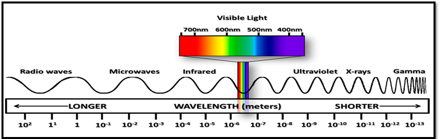

Electromagnetic waves are waves that can through empty space and do not need a medium to travel through.Electromagnetic waves travel faster through a vacuum, and slower throuhg a medium. They are transverse waves.
Electromagnetic Spectrum
The electromagnetic spectrum is a diagram of all the electromagnetic in order from low to high frequency. the longer the wavelength, the lower the frequency, the shorter the wavelength, the higher the frequency. Higher frequencies mean that the wave has more energy, and lower means that the wave has less energy.

- Radio Waves: Radio wave have the longest wavelength and lowest frequencies. They are used in broadcasts, TV, satellite transmissions, and radios.
- Microwaves: Microwaves are shorter than radio waves with higher frequencies. They are used by radars, cellphones, wifi, and microwaves (hence the name).
- Infared Waves: Infared waves have a shorter wavelength than microwaves and higher frequencies. They are used in night vision googles, TV remotes, and heaters.
- Visible Light: Visible light can range from 200 nm(red light) to 30 nm(violet light) with frequencies higher than infared waves. These are the only waves that humans can see.
- Ultraviolet Light: The wavelength of untraviolet light ranges from 400 nm to 10nm, the frequency (and energy) is high enough to penetrate living cells and cause damage to them. They are used in sterilization because they kill bacteria and viruses.
- X-Rays: X-rays have a wavelength from 10nm to 0.001nm. These rays have enough energy to penetrate deep into tissues and cause damage to cells. They are stopped by dense material such as bone and concrete. X-rays are used to look at solid structures like bones and bridges and for treatment of cancer.
- Gamma Rays: Gamma rays have the shortest wavelength of all the electromagnetic waves, less than 1 trillionth of a meter. They have enough energy to go through materials easily, you would need many layers of concrete to stop them.